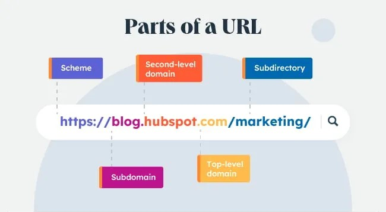

⊶ Browser ⊷
Browsers are programs that provide access to web resources. This software connects you to remote computers; opens and transfer files; displays text, images, and multimedia, and provide an uncomplicated interface to the Internet and web documents. Four well-known browsers are Google Chrome, Mozilla FireFox, Internet Explorer and Apple Safari, see Figure 2-2.
.png)
Figure 2-2 Browser (Google Chrome)
For browsers to connect to resources, the location or address of the resources must be specified. These addresses are called Uniform Resource Locator (URLs). All URLs have at least two basic parts.
Figure 2-3 Basic parts of URL
1. The first part presents the protocol used to connect the resources. Protocols are rules for exchanging data between computers. The protocol https is used for
web traffic and is one of the most secure and widely used Internet protocols.
2. The second part presents the domain name. It indicates the specific address where the resource is located. In figure 2-3, domain is identified as www.google.com.
The last part of the domain name following the dot (.) is the Top-level Domain (TLD). Also known as the web suffix, it typically indentifies the type of organisations. For example,
.com indicates a commercial site, see Table 2-1.
Once the browser has connected to the website, a document file is sent to your computer. This document typically contains Hypertext Markup
Language (HTML), a markup language for displaying web pages. The browser interprets the HTML formatting instructions and displays the document as a web page. For example,
when your browser first connects to the Internet, it opens up to a web page specified in the browser settings. Web pages present information about the site along with references and
hyperlinks or links that connect to other documents containing related information-text files, graphic images, audio and video clips.
Various technologies are used to provide highly interactive and animated websites. These technologies include:
| Domain | Type |
|---|---|
| .com | Commercial |
| .edu | Educational |
| .gov.in | Government |
| .net | Network |
| .org | Organisations |
| .co.in | Indian Company site |
Today it is common to access the Internet from a variety of mobile devices like smartphones and tablets. Special browsers called mobile browsers are designed to run on these portable devices. Unlike a traditional web browser that is typically displayed on a large screen, a mobile browser is displayed on a very small screen and special navigational tools are required to conveniently view web content. The smartphones for example enables you to 'pinch' or 'stretch' the screen with two fingers to zoom web content in and out, see Figure 2-4.

Figure 2-4 Zoom web content
Tips
Are you getting the most out of your web browser? Here are a few suggestions to make you faster and more efficient.
1. Bookmarks/Favorites Bar: Most browsers have a bookmarks or favorite bar just below the address bar. Add your top 5 or 10 most often-visited websites here. The next time you
want to visit one of these sites, select it from the bookmarks/favorites list rather than entering the site URL.
2. Shortcuts: Keyboard shortcuts are often faster than using a mouse. Use the following: F5 (refresh); Alt + left arrow (Back); Ctrl + W (close tab); Ctrl + E (adds 'www' and 'com' to
any domain you type in the address bar.)
3. Extensions/Add-Ons: Many browsers, such as Chrome and Firefox, allow users to install small, third-party programs that extend, or add to, the capabilities of the browser.
These programs can perform a variety of tasks, from providing easy access to cloud services to making it easier to capture information on a web page.
4. Configure Settings: All browsers have a settings or options page that provides ways to improve the security and privacy of Internet browsing. For example, you can deny
websites from automatically opening up another browser window, called pop-ups (these annoying windows often contain advertisements).
Box 2-1